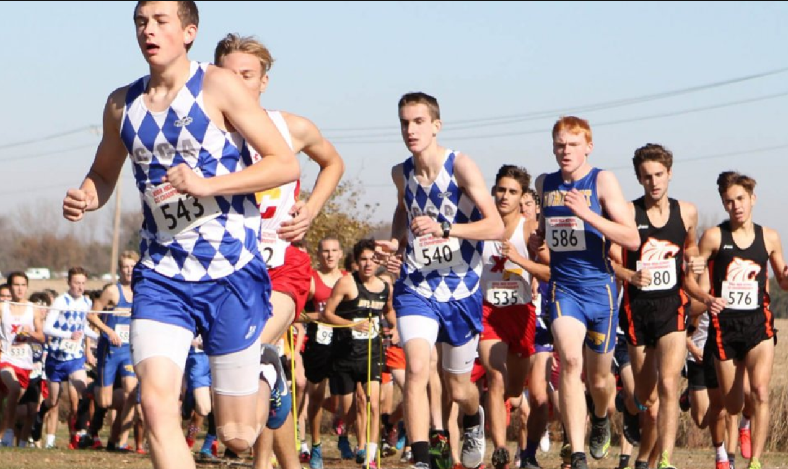
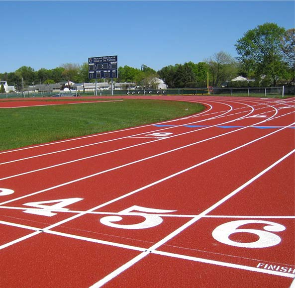

Cross Country & Track
Running
However, to compete in these sports, you obciously have to know the rules.
Let's take a look at the rules for the sports!
Rules
Cross Country

As TutorialsPoint states:
Sprinters should run in designated lanes and cannot cross lanes, throughout the race.
In races with bunched starts, athletes can break inside. In 800-meter race, they start from staggered positions and can break inside after the first bend.
In longer races of 1500 meters, 5000 meters, and 10000 meters, athletes can break inside after the start.
Sprinters shouldn’t step on white lines that mark their lanes throughout the race.
Sensors are placed in the starting pistol and at the blocks. In case of a false start, the athlete is disqualified.
Before giving the ‘set’ command or before firing the starter gun, athletes cannot touch the other side of the start line with their hands or feet.
Athletes should not obstruct other athletes during the race.
If an athlete is obstructed, the referee may order the race to be held again, or he may ask the athlete to take part in the next round.
Athletes may leave the track voluntarily before the race ends, but they cannot come back to the track else they will be disqualified.
Track

Team makeup – A Cross Country team is made of seven runners. The top five runners are the “scoring” members and the remaining two have the important job of displacing the scorers on opposing teams. Only the varsity level is limited to
seven competitors in a race, the other levels have unlimited entries.
Levels of competition – There are four levels in most cross country races. Each level competes in its own race and is scored separately. Most invitational races and our league meets use the following levels: Varsity, Junior
Varsity, Sophomore, and Freshman. Some invitationals will use a grade-level format. For these types of races, there is no Varsity team. The races are scored independently and sometimes the top five times from each team are compiled
to determine an overall winner.
Scoring – Races are scored by assigning a point value for the place a runner finishes in. If a runner finishes first, he/she will earn 1 point. Finishing 55th would earn 55 points. Cross Country is similar to golf in that
the lowest score wins. A perfect score is 15 points, with the top five runners occupying the first five finishing positions. Runners who do not have a full team are removed from the results for team scoring. This happens quite often
at larger races. Big invitationals and championship races are often won with point totals close to 100.
Race length – Most races are either three miles or five kilometers long. Occasionally a course will measure slightly short or long. Some courses are limited by their geography and the distances are kept consistent from year
to year. For example, Mt. Sac is always 2.93 miles. This is the most challenging course of the season, so most runners are thankful to not have to run an extra .07 miles.